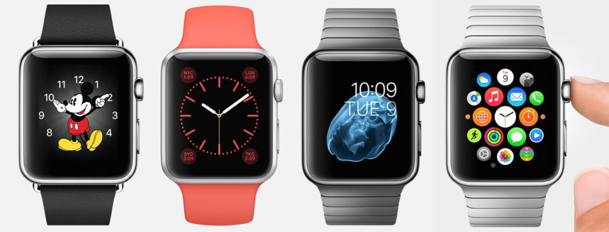
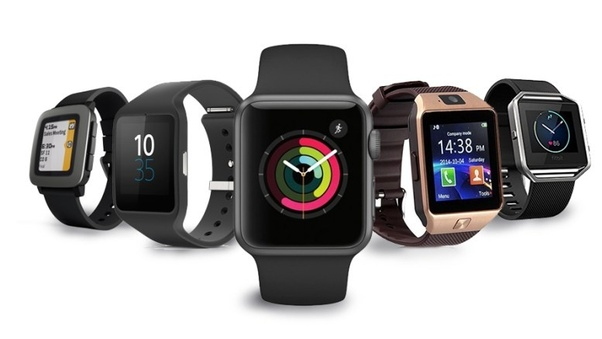

I can't count how many times I've heard people saying smartwatches are a waste of money. Unfortunately, those who say this simply don't understand just what a smartwatch is capable of doing.
There are two types of people who will be reading this post. Those who think they are a waste of money and those who want to know more about the advantages and disadvantages of smartwatches before making up their mind about buying one. So go ahead and check out our guide below. I am pretty sure you will have a solid understanding of whether a smartwatch is right for your lifestyle by the end of the article.
So, what can a smartwatch do over say a smartphone that makes it a worthwhile investment? Let's take a look at some of the key smartwatch uses that might persuade you to take the jump.
It's a holiday time, shop your best watch for the love ones.

A smartwatch is a portable device that's designed to be worn on a wrist. Smartwatches like smartphones- use touchscreens, offer apps, and often record your heart rate and other vital signs. The Apple Watch and Wear OS (formerly Android Wear) models prompted more consumers to appreciate the usefulness of wearing a mini computer on their wrists. In addition, specialty smartwatches for outdoor activities often supplement other, bulkier devices in an adventurer's tool kit.